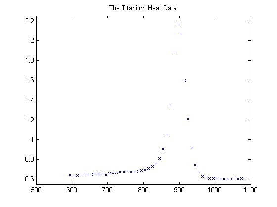
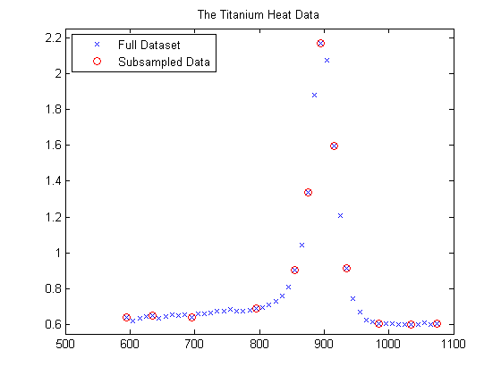
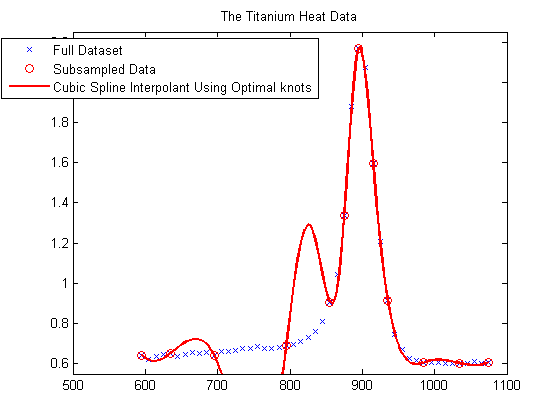
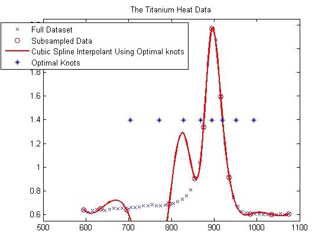
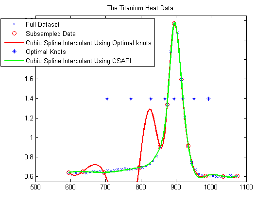
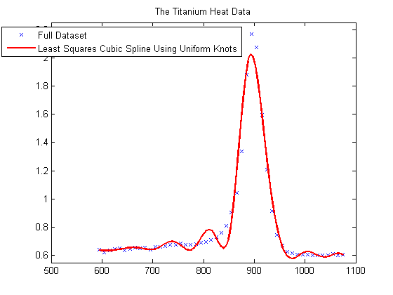
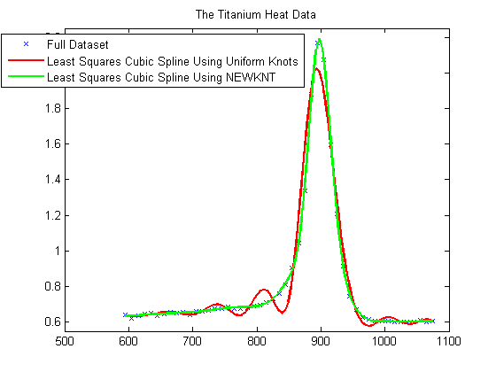

How to Choose Knots
This demo illustrates how to use the optknt and newknt commands from Curve Fitting Toolbox™.
Contents
Sample Data
Here are some sample data, much used for testing spline approximation with variable knots, the so-called Titanium Heat Data. They record some property of titanium measured as a function of temperature.
[xx,yy] = titanium; plot(xx,yy,'x'); axis([500 1100 .55 2.25]); title('The Titanium Heat Data'); hold on
Notice the rather sharp peak. We'll use these data to illustrate some methods for knot selection.
First, we pick a few data points from these somewhat rough data. We will interpolate using this subset, then compare results to the full dataset.
pick = [1 5 11 21 27 29 31 33 35 40 45 49]; tau = xx(pick); y = yy(pick); plot(tau,y,'ro'); legend({'Full Dataset' 'Subsampled Data'}, 'location','NW');
General Considerations
A spline of order k with n+k knots has n degrees of freedom. Since we have 12 data sites, tau(1) < ... < tau(12), a fit with a cubic spline, i.e., a fourth order spline, requires a knot sequence t of length 12+4.
Moreover, the knot sequence t must satisfy the Schoenberg-Whitney conditions, i.e., must be such that the i-th data site lies in the support of the i-th B-spline, i.e.,
t(i) < tau(i) < t(i+k) for all i,
with equality allowed only in case of a knot of multiplicity k.
One way to choose a knot sequence satisfying all these conditions is as the optimal knots, of Gaffney/Powell and Micchelli/Rivlin/Winograd.
Optimal Knots
In optimal spline interpolation, to values at sites
tau(1), ..., tau(n)
say, the knots are chosen so as to minimize the constant in a standard error formula. Specifically, the first and the last data site are chosen as k-fold knots. The remaining n-k knots are supplied by optknt.
Here is the beginning of the help from optknt:
OPTKNT Optimal knot distribution.
OPTKNT(TAU,K) returns an `optimal' knot sequence for interpolation at data sites TAU(1), ..., TAU(n) by splines of order K. TAU must be an increasing sequence, but this is not checked.
OPTKNT(TAU,K,MAXITER) specifies the number MAXITER of iterations to be tried, the default being 10.
The interior knots of this knot sequence are the n-K sign-changes in any absolutely constant function h ~= 0 that satisfies
integral{ f(x)h(x) : TAU(1) < x < TAU(n) } = 0for all splines f of order K with knot sequence TAU.
Trying OPTKNT
We try using optknt for interpolation on our example, interpolating by cubic splines to data
(tau(i), y(i)), for i = 1, ..., n.
k = 4; osp = spapi( optknt(tau,k), tau,y); fnplt(osp,'r'); hl = legend({'Full Dataset' 'Subsampled Data' ... 'Cubic Spline Interpolant Using Optimal knots'}, ... 'location','NW'); set(hl,'Position',get(hl,'Position')-[.14,0,0,0]);
This is a bit disconcerting!
Here, marked by stars, are also the interior optimal knots:
xi = fnbrk(osp,'knots'); xi([1:k end+1-(1:k)]) = []; plot(xi,repmat(1.4, size(xi)),'*'); hl = legend({'Full Dataset' 'Subsampled Data' ... 'Cubic Spline Interpolant Using Optimal knots' ... 'Optimal Knots'}, 'location','NW'); set(hl,'Position',get(hl,'Position')-[.14,0,0,0]);
What Happened?
The knot choice for optimal interpolation is designed to make the maximum over all functions f of the ratio
norm(f - If) / norm(D^k f)
as small as possible, where the numerator is the norm of the interpolation error, f - If, and the denominator is the norm of the k-th derivative of the interpolant, D^k f. Since our data imply that D^k f is rather large, the interpolation error near the flat part of the data is of acceptable size for such an `optimal' scheme.
Actually, for these data, the ordinary cubic spline interpolant provided by csapi does quite well:
cs = csapi(tau,y); fnplt(cs,'g',2); hl = legend({'Full Dataset' 'Subsampled Data' ... 'Cubic Spline Interpolant Using Optimal knots' ... 'Optimal Knots' 'Cubic Spline Interpolant Using CSAPI'}, ... 'location','NW'); set(hl,'Position',get(hl,'Position')-[.14,0,0,0]); hold off
Knot Choice for Least Squares Approximation
Knots must be selected when doing least-squares approximation by splines. One approach is to use equally-spaced knots to begin with, then use newknt with the approximation obtained for a better knot distribution.
The next sections illustrate these steps with the full titanium heat data set.
Least Squares Approximation with Uniform Knot Sequence
We start with a uniform knot sequence.
unif = linspace(xx(1), xx(end), 2+fix(length(xx)/4)); sp = spap2(augknt(unif, k), k, xx, yy); plot(xx,yy,'x'); hold on fnplt(sp,'r'); axis([500 1100 .55 2.25]); title('The Titanium Heat Data'); hl = legend({'Full Dataset' ... 'Least Squares Cubic Spline Using Uniform Knots'}, ... 'location','NW'); set(hl,'Position',get(hl,'Position')-[.14,0,0,0]);
This is not at all satisfactory. So we use newknt for a spline approximation of the same order and with the same number of polynomial pieces, but the breaks better distributed.
Using NEWKNT to Improve the Knot Distribution
spgood = spap2(newknt(sp), k, xx,yy); fnplt(spgood,'g',1.5); hl = legend({'Full Dataset' ... 'Least Squares Cubic Spline Using Uniform Knots' ... 'Least Squares Cubic Spline Using NEWKNT'}, ... 'location','NW'); set(hl,'Position',get(hl,'Position')-[.14,0,0,0]); hold off
This is quite good. Incidentally, even one interior knot fewer would not have sufficed in this case.